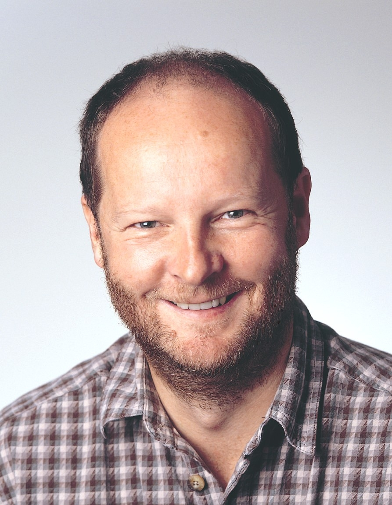
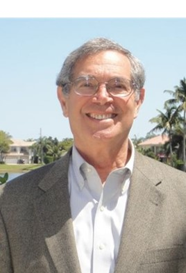

| ||||||||||||||||||||||||||||||||||||||||||||||||||||||||||||||||||||||||||||||||||
2015 SDP Officers & Members2015 SDP Officers
| ||||||||||||||||||||||||||||||||||||||||||||||||||||||||||||||||||||||||||||||||||


 |
 |
|
Eric Johnson - Secretary |
Steve Tani - Treasurer |
|
BiographyEric Johnson is an experienced decision professional with PhD training in decision analysis who has served multiple industries, from the inside and as a consultant. He has a PhD in Management Science and Engineering from Stanford, with a focus in DA. In his first jobs, he used DA approaches to support tactical and strategic decisions at electric utilities. He then worked in DA consultancies, serving clients in pharmaceuticals and oil and gas. In these roles, he developed and rolled out decision analytic approaches to finding value, for use by himself and others. This work led to $100s of millions of value added, and being honored as best DA project by the DA Society of INFORMS in 2001. He now works at Bristol-Myers Squibb, helping teams formulate excellent drug development strategies. He co-authored the Handbook of Decision Analysis from a practitioner's point of view, discussing both the hard and soft skill of DA practice, using both single- and multiple-objective approaches. He is a Fellow of the SDP. |
BiographySteven Tani is a partner of Strategic Decisions Group and an SDG Fellow. Since joining SDG in 1993, he has assisted a wide variety of clients in R&D portfolio management, new business entry strategy, overseas capital investment decisions, and new product planning. His clients have included companies in the pharmaceutical, chemical, heavy industrial equipment, electric power generation, timber, petrochemicals, and office equipment industries as well as public sector agencies. Dr. Tani holds a PhD and an MS in engineering-economic systems and a BS in engineering science, all from Stanford University. He is a co-author of Handbook of Decision Analysis, published in 2013 by John Wiley & Sons. He is a Fellow in the Society of Decision Professionals and currently serves on the SDP Board as Treasurer. |
2015 SDP Board Members
- Steve Begg (2014-2017)
- Terry Bresnick (2013-2016)
- Raymond Fonk (2013-2016)
- Karen Jenni (2014-2017)
- Bruce Judd (2014-2017)
- Elayne Ko (2015-2018)
- William Leaf-Herrmann (2015 - 2018)
- Tim Nieman (2013-2016)
- Somik Raha (2015-2018)
|  |  |  |
 |
|||
Steve Begg |
Terry Bresnick |
Raymond Fonk |
Karen Jenni |
|||
BiographySteve Begg has been a Professor at the University of Adelaide since 2002, where his focus is on project and portfolio investment decision-making under uncertainty. He delivers both undergraduate and postgraduate DA courses. Previously, Steve was Director for Decision Science and Strategic Planning with Landmark Graphics Corporation (a Halliburton company) where he was responsible for leading improved decision-making and economic evaluation and for both Landmark and its customers. Prior to that, he worked for BP for 13 years, the last 6 of which were spent in a variety of senior operational assignments in Alaska, which included decision-making, economic evaluation and production-forecasting. He also spent seven years as a researcher and Project Manager with BP Research, where his focus was uncertainty assessment.
Steve has twice been a Distinguished Lecturer on DA topics for the Society of Petroleum Engineers (SPE), has chaired sessions and conferences on DA, published numerous papers on DA topics and co-authored a DA book, "Making Good Decisions”. He has given courses on DA topics to many companies in the Oil & Gas sector, as well as providing consulting services. He has also held a variety of leadership positions in the SPE and is a founding member of the SDP.
|
BiographyTerry Bresnick is the former CEO, President, and co-founder of Innovative Decisions, Inc. in Vienna, VA, and is President of Innovative Decision Analysis. Previously, he was VP of Decision Science Consortium, and a Decision Analyst with Decisions and Designs, Inc. He holds the Degree of Engineer in Engineering-Economic Systems and an M.S. in Statistics, both from Stanford University; an M.B.A. in Decision Science from George Mason University; and a B.S. in Engineering from the U.S. Military Academy. He has more than 38 years experience applying decision analysis to complex problems of government and industry. First, as an officer in the U.S. Army, and currently, as a consultant in the private sector, Mr. Bresnick serves clients in the areas of decision analysis, risk analysis, strategic planning, resource allocation and budgetary analysis, evaluation of competing alternatives, and cost-benefit analysis. He has facilitated more than 1000 decision conferences, workshops, and seminars. He has been an Assistant Professor of Systems and Decision Analysis at the U.S. Military Academy. He is a past recipient of the Rist Prize by the Military Operations Research Society (MORS), has had three Best Decision Analysis Working Group Papers at MORS, and has been runner-up in the INFORMS DAS annual Best Application competition. He is a co-author of the Handbook for Decision Analysis published in March 2013, and has published numerous articles in refereed journals as well as book chapters. He is currently an SDP Fellow, a Certified Financial Planner, and a registered Professional Engineer in Virginia. |
BiographyRaymond Fonk is currently manager of Development Planning, the centre of excellence for exploration & development opportunity realization, project integration and decision quality within Shell International, Houston. He joined Shell in The Netherlands in 1991 from the IT industry and spent the first years with Shell as a geophysicist working in research and exploration. After assignments in technology deployment and organizational effectiveness, he moved to Shell Houston, where he has been involved in Shell’s deepwater strategy and upstream development planning, and had management roles in deepwater exploration and development projects, as well as onshore enhanced oil recovery. Throughout his career he has had a profound interest in decision making processes and their application in a results-driven business environment. He has been a member of SDP since 2011 and has been an active member of the Program Council since that time. Raymond has degrees in physics and applied mathematics from Leiden University as well as a degree in music performance. In his spare time he enjoys reading, travelling, and both listening to and playing – mostly classical – music. |
BiographyKaren Jenni is a professional decision analyst with over 20 years of consulting experience. She has marketed, conducted, lead, and managed projects applying decision analysis and risk management techniques to energy and environmental policy problems in both the public and private sectors. She started her professional career at Applied Decision Analysis, spent 5 years as a Principal at Geomatrix Consultants, a mid-size environmental and geo-technical consulting company, and founded Insight Decisions in 2005. Along the way she took "time off” from paid work and earned her Ph.D. in Engineering and Public Policy from Carnegie Mellon University. Recent work has run the full gamut of "soft” and "hard” DA skills, from leading framing workshops, organizing teams, and facilitating meetings; working with decision-makers to understand their needs; developing, eliciting, and integrating data, models, and client team inputs to meet those needs; to communicating the results to the decision-makers. Dr. Jenni has also served as an expert witness, authored several practice papers and served on a National Academy of Sciences committee. Previous Board service includes three years on the Board of Directors at Geomatrix, and three years as a Council Member for the Decision Analysis Society of INFORMS. |
|||
 |
 |
 |
||||
Bruce Judd |
Elayne Ko |
William Leaf-Herrmann |
Tim Nieman |
|||
BiographyDr. Judd, a partner at Strategic Decisions Group, has 40+ years of experience as an educator and consultant in decision analysis. He is the founder and managing director of SDG’s executive education practice, which helps clients develop capabilities to enhance the quality of their decision-making. He served on the faculty of Stanford’s Graduate School of Business for 14 years and Northwestern’s Kellogg School of Management for 7 years. He is curriculum developer and lead instructor for courses in Stanford’s Certificate Program in Strategic Decision and Risk Management. As an educator, Dr. Judd develops tailored capability-building programs for clients. He has helped to transform the decision-making culture in Fortune 50 companies in financial services, oil and gas, manufacturing, and pharmaceuticals. As a consultant, Dr. Judd’s specialty is assisting decision-makers in high stakes, high risk situations. Typical private-sector assignments include developing business strategies in telecommunications, medical devices, manufacturing, chemicals, automotive, office products, and publishing industries. His public-sector work includes analysis of decisions related to arms control, siting nuclear facilities, and evaluating security systems to prevent theft of nuclear materials. Dr. Judd received a PhD and an MS in engineering-economic systems from Stanford University and a BS in science engineering from Northwestern University.
|
BiographyElayne Ko currently holds a Director position at the Portfolio and Decision Analysis (PDA) group within Pfizer, Inc. She has over 15 years of experience in applying decision analysis to investment decision-making under uncertainties. Her focus is primarily within the pharmaceutical industry; in particular, drug research and development (R&D) decisions, long-term planning, and disease area/portfolio prioritization. She works with both the R&D teams and senior management making funding decisions. Elayne has worked – in the consulting and corporate settings – across several industries including healthcare information technology, oil & gas and mining. Prior to Pfizer, Elayne held positions as Portfolio Manager at Siemens Health Services Strategy Group, Manager at Deloitte Financial Advisory Services LLP, and Senior Consultant within the Applied Decision Analysis group of PricewaterhouseCoopers. Elayne obtained a BSc in Management Sciences and MSc in Decision Sciences from The London School of Economics. |
BiographyDr. Leaf-Herrmann, a Senior Principal at IMS Consulting Group, has over 20 years of experience as a business strategist in the life sciences, automotive, chemical, and financial services industries and specializes in strategy development and portfolio management for clients in the pharmaceutical and biotechnology industries. With expertise spanning R&D and commercial strategy development, Dr. Leaf-Herrmann has consulted on both corporate and product-level strategy. Dr. Leaf-Herrmann brings significant global experience, having led projects in China, India, Japan, South Korea, and Taiwan, in addition to North America and Europe. Dr. Leaf-Herrmann learned the science and practice of decision analysis through formal courses and client engagements as a consultant with Strategic Decisions Group. He has taught the principles and application of DA through courses and coaching, and has assisted multiple pharmaceutical organizations establish and grow internal decision support teams. Prior to joining IMS Consulting Group, Dr. Leaf-Herrmann was a partner in the Life Sciences Practice of Strategic Decisions Group. He is a Fellow in the Society of Decision Professionals and served as Secretary from September 2010 – June 2013 and a board member from 2014 –2015. Dr. Leaf-Herrmann holds a Ph.D. and A.M., physics from Harvard University, a Certificate of Post-Graduate Study, University of Cambridge (Churchill Scholar) and a B.S., in physics and applied mathematics from Purdue University.
|
BiographyTim Nieman is the founder and president of Decision Applications in St. Helena, California, specializing in decision analysis consulting, primarily in the Energy and Environmental industries. He spent 14 years at Amoco as a geophysicist, economist, and decision analyst, 3 years with Lumina Decision Systems as Director of Operations, and the past 12 years as a decision analysis consultant. Tim is and has been the primary instructor for PetroSkills’ decision analysis courses for the past 8 years, having taught more than 1500 oil industry professionals. He is an accomplished facilitator, trainer and decision modeler, with a passion for expanding and enhancing the use of decision analysis methods and techniques wherever practical. He has a B.S. in geology / M.S. in geophysics from Michigan State University and an MBA from Rice University. |
|||
Somik Raha |
||||||
BiographySomik Raha holds a PhD in Decision Analysis from Stanford University with a dissertation titled "Achieving Clarity on Value.” He is currently Product Manager and Associate at Menlo Park-based SmartOrg, Inc., building products to embed Decision Analysis into business work processes. He is deeply interested in the intersection of core values and decision-making. |